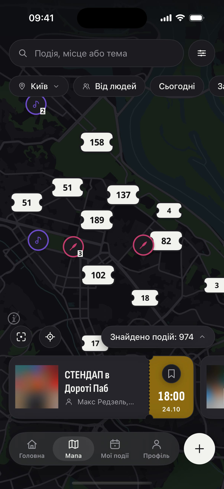

скинь тому, хто каже«може наступного разу» 👇
друг, який…
ДОСЬЄ
обіцяв(-ла) стендап ще в травні
знає всі концерти, але не ходить
«а з ким?»
«скинь потім» — і ніколи


а тепер покажи йому(їй) це:
куди — на мапі
з ким — можна зібрати на події
БІЛЬШЕ БЕЗВІДМАЗОК
скинь, не соромся 😏
Поряд